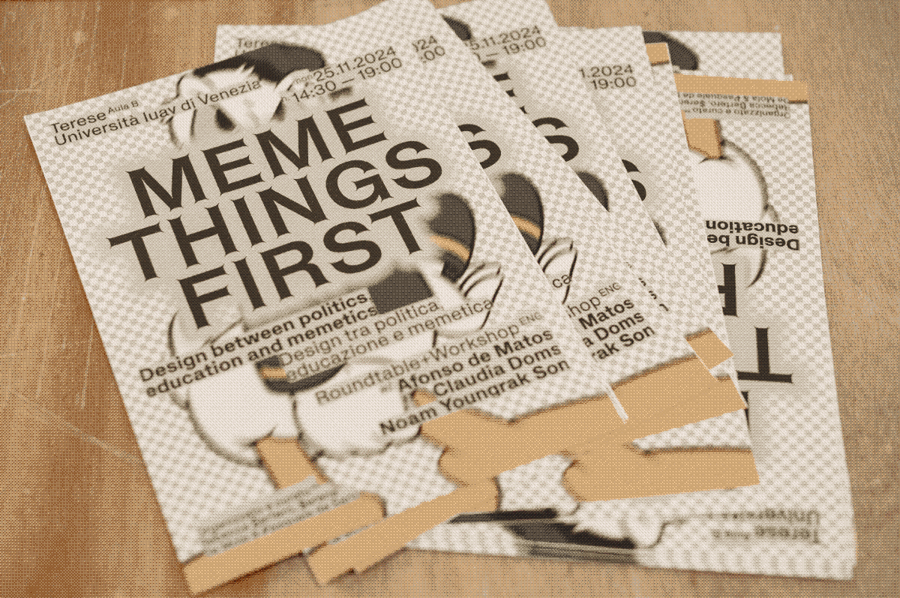
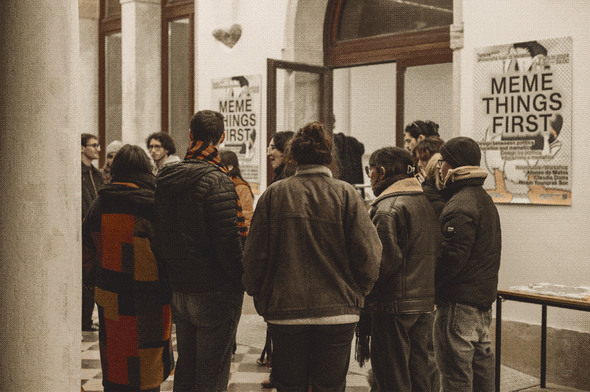
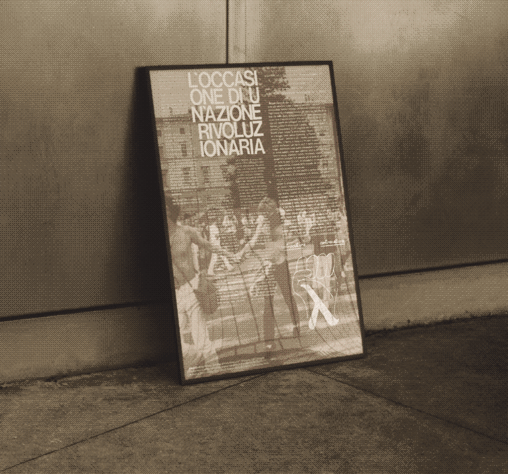
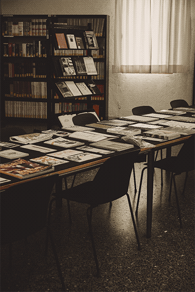
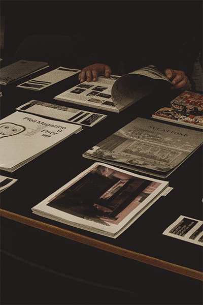
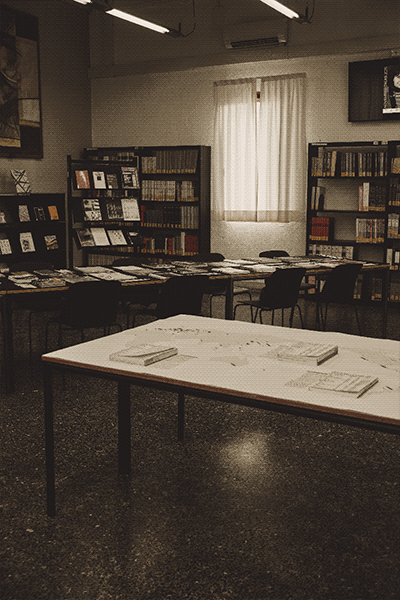

pagine queer. le riviste indipendenti come luogo d'intersezione. iuav master thesis, 2023. editorial & research. 396 pages, 170×240mm, paperback binding. 6 case studies (it & eu), 4 interviews, many archives consulted. typeset in happy times by lucas le bihan for velvetyne type foundry, amiamie by mirat masson for byebyebinary typothèque. more


al perpetuo crepuscolo. società dell'informazione tra propaganda e meme. self initiated project with senato dellx studentx iuav, 2022—2023. seminar, workshop, visual identity, editorial publication. 5 guests, 1 workshop with 40 students. big poster 580×420mm, 1/2 pantone colors on matt coated paper. flyer 148×210mm cmyk on orange paper. publication of 196 pages, 105×210mm, paperback binding, 2/2 pantone colors on fedrigon symbol tatami white paper. typeset in suisse int'l by ian party for swiss typefaces. with stefania d'eri & alessandro durighello. more


annuario della ricerca iuav 2019—2020. internship at iuav communication office, 2022. editorial & data visualization. 260 pages, 240×310mm, swiss binding, k+4 pantone on fedrigoni arena natural smooth paper. typeset in sectra by/for grilli type, ibm plex mono by mike abbink and bold monday. with sara cavallini & alessandro durighello. more


meme things first. design between politics, education and memetics. self initiated project with senato dellx studentx iuav, 2024. seminar, workshop, soon editorial publication. 3 guests, 1 workshop with 35 students. poster 580×420mm, 4/4 CYMK colors on coated paper. typeset in helveesti and helveesti spikes by dinamo typefaces. with rebecca bertero & pasquale de sario.


la prima volta fu rivolta. poster, 2024. 594×420mm, 4/4 CYMK colors on coated paper. for the event tracce. fundraising for palestine by spazio alelaie. more

critica senza lotta. cartografie editoriali d'architettura nel mondo 2015-2025. exhibition, 2025. with piergiorgio boscaro, pietro fabris, lorenzo rapisarda.

